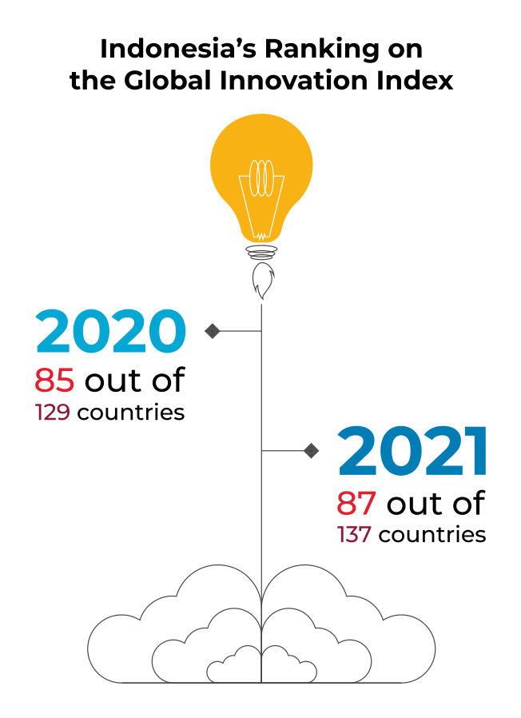
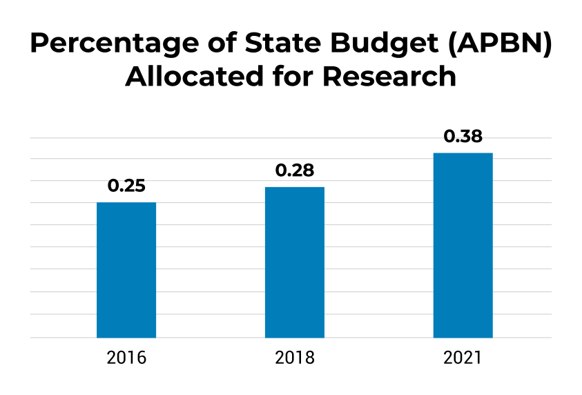

United Nations In Indonesia
Country Results Report 2021
Innovation to Accelerate Progress
Towards the SDGs

COVID-19 put beyond all doubt that none of us is safe until we are all safe and underscored the urgency of accelerating the SDGs and meeting their central promise to leave no one behind.
The UN continues to work with the Government of Indonesia on policy frameworks that advance the SDGs and ensure no one is left behind. On Goal Two, Zero Hunger, for example, the UN is supporting the Government’s development of e-Agriculture strategies that bolster food security through its Decade of Family Farming Global Action Plan. The UN also supports the expansion of a Ministry of Agriculture-led apprenticeship scheme for agriculture-based occupations, as well as the creation of a new financial product co-developed with banks, which targets young people without financial experience and has considerable potential for national upscaling.
On Goal Five, Gender Equality, the UN began a collaboration with the Ministry of National Development Planning to develop a national strategy on gender mainstreaming using a gender responsive budget. Upon completion in 2022, the strategy will contain executive directions on the use of gender-responsive indicators for national and sub-national government budget plans.
And on Goal Six, Clean Water and Sanitation, the UN assisted the government in finding innovative solutions to water quality and supply challenges, in line with the consultative roadmap on delivering safely managed water services nationwide by 2030. Meanwhile, thematic studies and policy recommendations derived from two agriculture-focused loan projects—IPDMIP and READSI—contributed to new national regulations on irrigation that have increased farmers’ yields and incomes.
Realising the SDGs requires not just an appropriate policy framework, but the massive mobilisation of resources. Indonesia’s Ministry of National Development Planning has estimated that Indonesia needs some US$4.7 trillion to finance the achievement of the SDGs by 2030, a figure the COVID-19 pandemic will have made far higher.
The UN is working with the Government to develop innovative financing mechanisms to close the financing gap. Officially launched in December 2021, the Joint SDG Fund-backed ASSIST Joint Programme engages four UN agencies to scale up proven and new financial instruments that can be used to leverage public and private financing towards the SDGs. The programme is designed to build the capacity of institutional stakeholders to access and utilize financing to achieve the SDGs. It mobilised a total of US$1.68 billion in resources in Indonesia in 2021, through an innovative mixture of public and private financing.
Through ASSIST, the UN also supported the Government’s launch of its inaugural sovereign SDG Bond in September 2021. The bond amounted to EUR 500 million (US $584 million) at a 1.3% coupon rate in the global capital market. It focuses on financing social sectors responding to the effects of the COVID-19 pandemic, including projects on social protection, health, and education.

Besides new financial mechanisms, the UN is also pioneering new technologies to accelerate Indonesia’s progress towards realising the SDGs. In health, for example, in 2021, four years ahead of schedule, all 34 of the country’s provincial governments were using technology to deliver immunisation services. The UN’s SMILE digital platform had helped distribute more than 250 million COVID-19 vaccine doses to a population of some 270 million people by years’ end.
Meanwhile, a software enhancement to SMILE enabled the platform to synergise service delivery between the Ministry of Health and Indonesia’s largest vaccine manufacturer,
Biofarma. The government also deployed the One Data Vaccination System to facilitate real time monitoring of COVID-19 responses, with additional data inputs from UNICEF’s RapidPro monitoring system, an open-source platform that allows users to input data via SMS, and other widely available communication platforms.